-
Братья Райт
14 декабря 1903 года на 3,5 секунды поднялся в воздух "Флайер" - первый аэроплан братьев Райт.
Младший из Райтов, Уилберт, был в воздухе целых 59 секунд и преодолел 260 метров.
Пресса не оценила полученную информацию: "Всего 59 секунд. Если бы было 59 минут, то стоило бы об этом говорить".
Через год прошли успешные испытания "Флайера II".
Улучшенная модификация "Флайер III" совершил полет продолжительностью 39 мин. 23 сек. покрыл при этом расстояние в 38,9 км
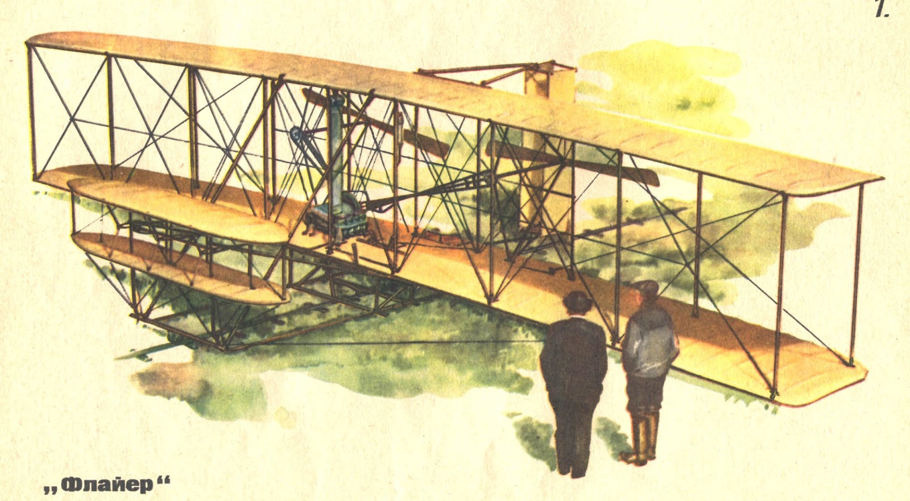
Братья Шарль и Габриель Вуазьен
В 1905 году Братья Шарль и Габриель Вуазьен создали по заказу клиентов летающие модели.
В 1907 году братья получили заказ на изготовление аэроплана "Voisin-Farman" для знаменитого мотогонщика Анри Фармана.
На ней был совершен полет на 771 метров. Это был второй рекорд дальности.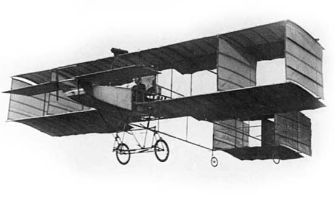
Анри Фарман
Бывший гонщик настолько увлекся авиацией, что решил приступить к выпуску собственных самолетов.
В 1913 году Анри Фарман и его брат Морис создали самолет, показавший великолепные аэродинамические качества.
Отличительной чертой самолетов этого типа стали выступающие вперед балки фюзеляжа, на которых был установлен руль высоты.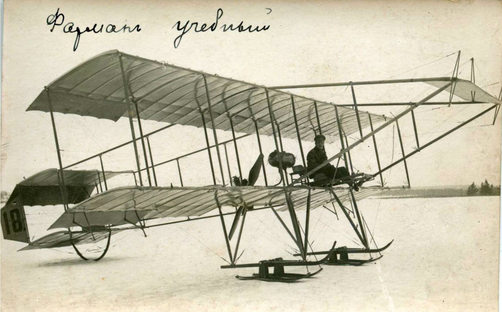
Луи Блерио
В 1907 году французский авиаконструктор и пилот Луи Блерио на самолете собственной конструкции "Стрекоза" совершил полет на расстояние 184 м.
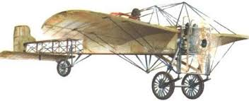на аппарате "Блерио VII" - на 500 м.
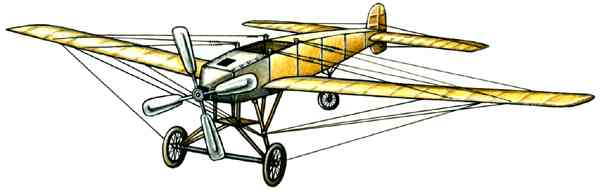В 1908 году "Блерио VIII"он выполнил перелет 14 километров за 11 минут.
25 июля 1909 года, построив моноплан "Блерио XI", он первым перелетел через пролив Ла-Манш, преодолев расстояние 38 км. за 36,5 мин.
Достижения отечественников
А.Уфимцев и С.Гризодубов
С 1909 года в Российской империи появляются первые самодельные аэропланы А.Уфимцева и С.Гризодубова.
Гризодубов пользуясь лишь кинокадрами о полете братьев Райт, сделал чертежи самолета и реализовал свой проект.
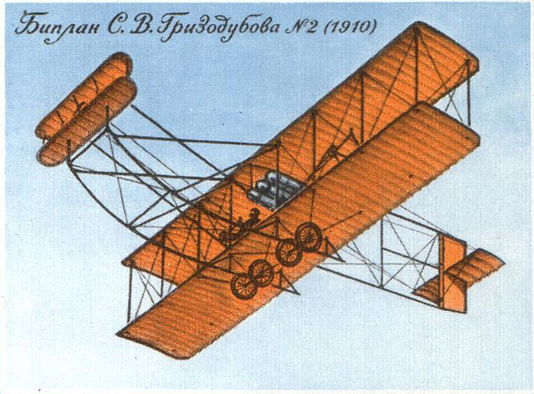
И.Сикорский
Мировую славу отечественному авиастроению принес И.Сикорский.
Созданные им бипланы "С-6" и "С-10" были близки самолетам немецкой конструкции, но больший размах крыльев и элегантная внешняя отделка сделали их более скоростными и совершенными.
На своих аппаратах Сикорский установил мировые рекорды скорости:
с двумя пассажирами на борту - 111 км/ч, с пятью - 106 км/ч.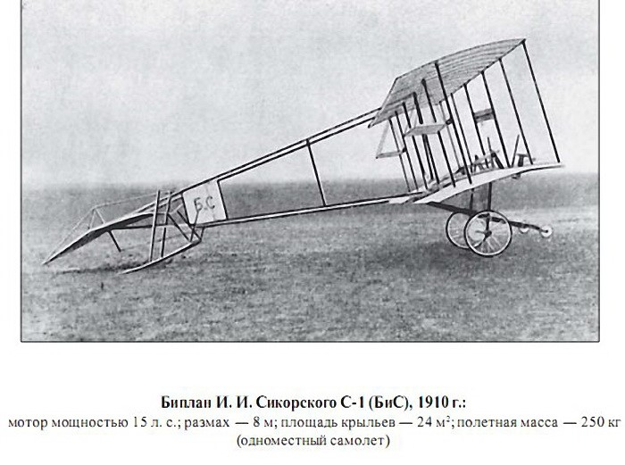 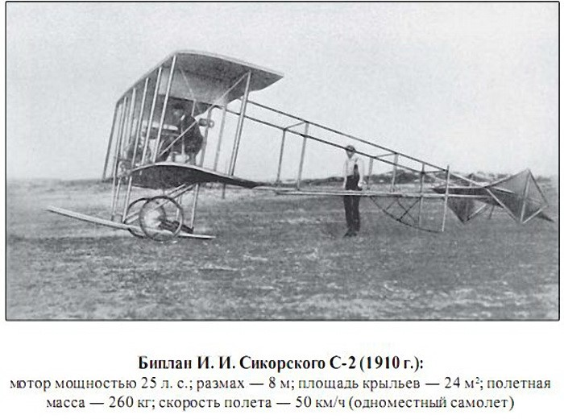 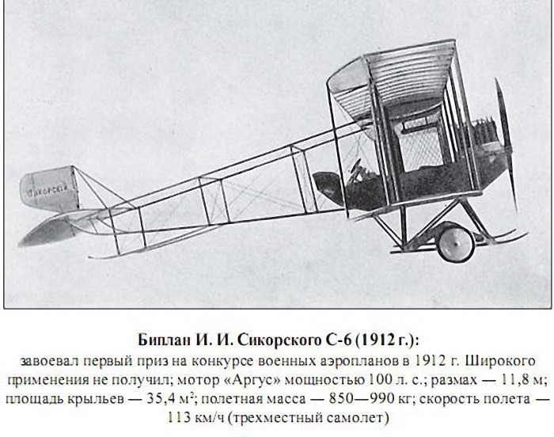 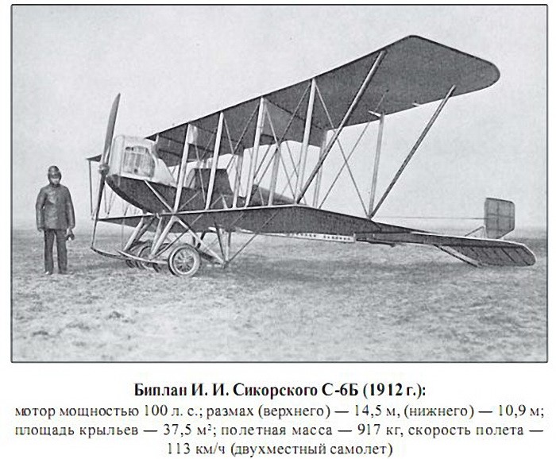 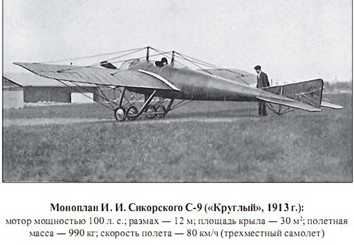 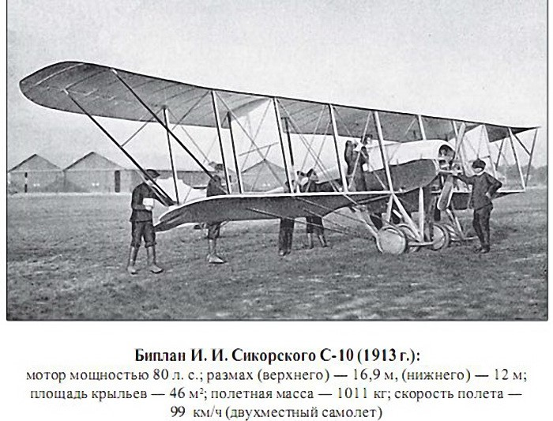В 1913 году И.И. Сикорский построил первый четырёхмоторный биплан «Русский витязь» и первый в мире пассажирский самолёт, а впоследствии бомбардировщик «Илья Муромец»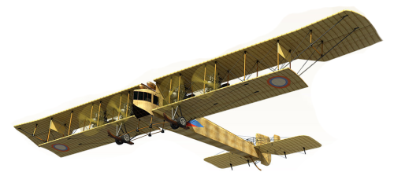
Илья Муромец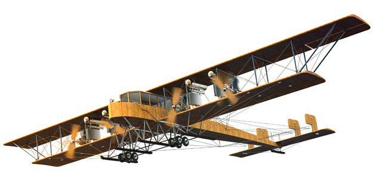
Русский ВитязьВ 1914 году Сикорский c экипажем совершил перелет из Петербурга в Киев с промежуточными пересадками.
Расстояние 1280 км. было преодолено за 30ч. 30мин., летное время составило 12ч. 50мин. Это был мировой рекорд.
"Илья Муромец" - самый большой и самый мощный самолет своего времени, в годы войны стал основой первого в мире соединения тяжелой авиации.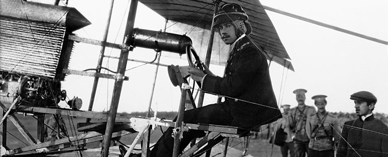
Сикорский на во время киевских маневров
Геликоптеры или вертолеты
Не смотря на отставание в разработке геликоптеров в XIX столетии, первые винтокрылые появились едва ли не в одно время с первыми самолетами. Прогресс был связан в первую очередь с использованием моторов. Первой ласточкой стал запущенный еще в 1905 году аппарат М.Леже. Два его противоположно вращающиеся винты приводились в действие электродвигателем.
Успехи Леже были неоспоримы: машина смогла даже на некоторое время подняться в воздух.
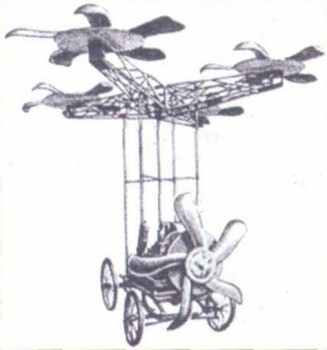
Фирма "Бреге - Рише"
Годом рождения вертолета следует считать 1907г. 16 сентября 1907 года французская машина фирмы "Бреге - Рише" впервые смогла оторваться от земли и приподнять над ней человека.
"Жироплан", как назвали летательный аппарат, приводился в действие одним бензиновым двигателем мощностью 50 лошадиных сил, соединенным с четырьмя винтами.
Четыре человека на земле обеспечивали устойчивость летательного аппарата, подпирая его шестами, которые, хотя и не способствовали созданию подъемной силы, но ограничивали управление. То есть, полет "жироплана" нельзя назвать свободным.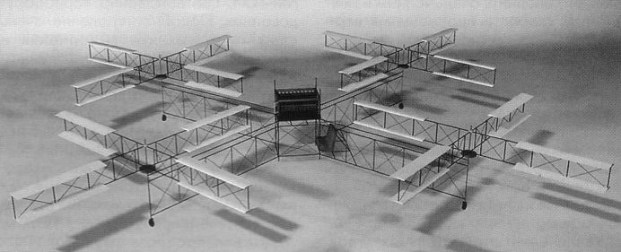
Поль Карно
По-настоящему первый свободный полет на вертолете осуществил Поль Карно.
Произошло это 13 ноября 1907 года во Франции.
Он поднялся в воздух на двухвинтовом летательном средстве, оснащенном двигателем "Антуанетт" мощностью 24 лошадиных сил. Машина находилась в воздухе 20 секунд на высоте от 0,3 до 1,5 метров.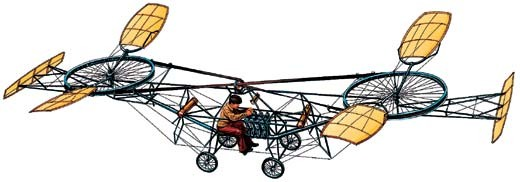
Юрьев Б.
В 1911 году русский изобретатель Борис Юрьев, будучи еще студентом, опубликовал схему одновинтового вертолета. Главное, что придумал Юрьев - способ управлять лопастями несущего винта. Он изобрел "автомат перекоса". Каждая лопасть винта описывает при вращении круг. Если лопасти несущего винта сделать подвижными относительно своих продольных осей, таким образом, что они смогут менять угол наклона к плоскости вращения, то можно очень легко управлять движением вертолета.
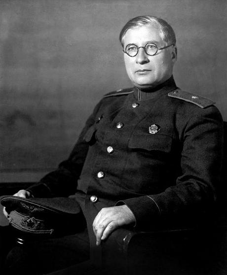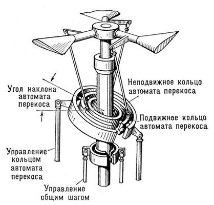
Григорович Д.П.
В 1913 г. Григорович Дмитрий Павлович сконструировал летающие лодки «М-1» и "М-2", ставшие первыми в мире гидросамолетами.
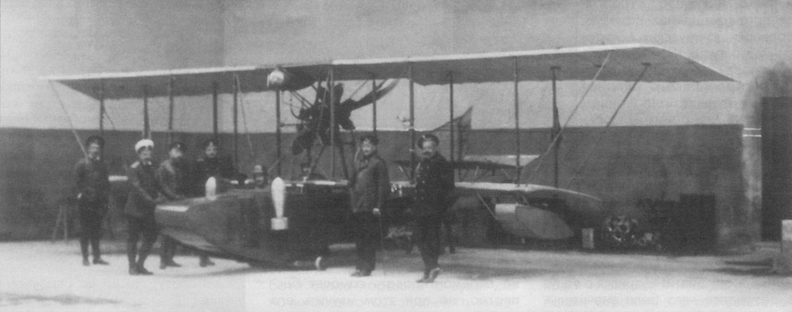
M-1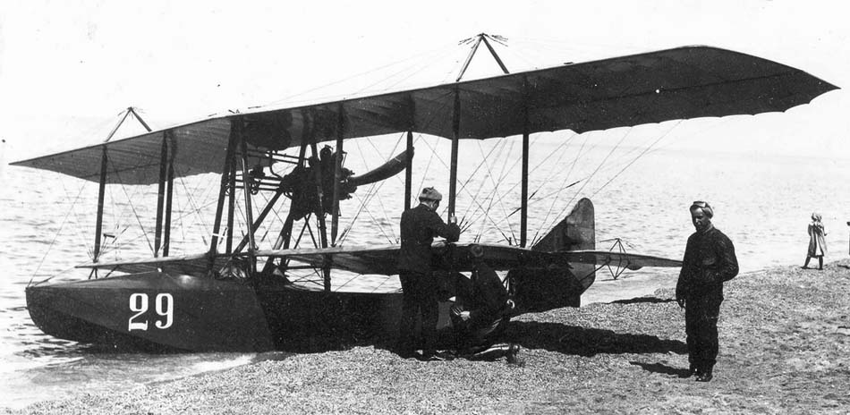
M-2
-
К 1910 году стали доминирующими два варианта самолета
Моноплан
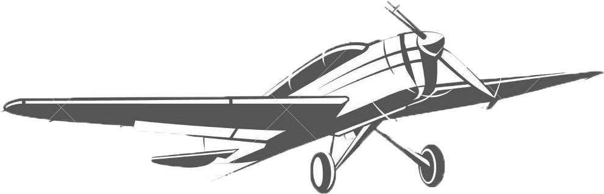Недостатки моноплана:
Крыло было непрочным и чтобы его усилить, требовались мощные расчалки, прикрепляемые к крепежным стойкам, расположенным над и под фюзеляжем.Достоинство моноплана:
Одно крыло обладало меньшим аэродинамическим сопротивлением и позволяло достичь большей скорости.
К тому же монопланы были более маневренными.Биплан
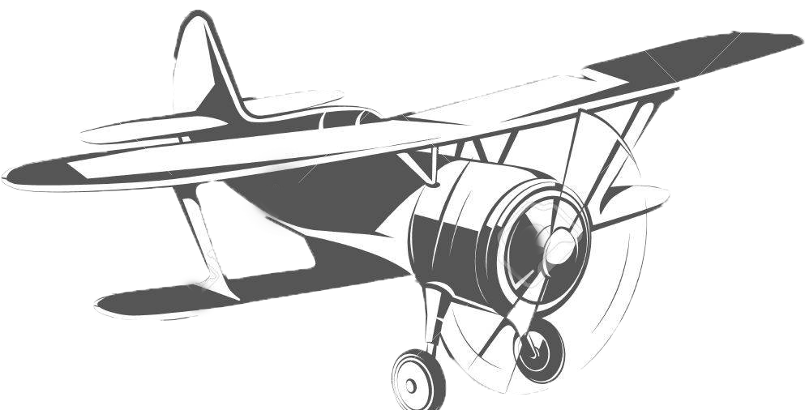Недостаток биплана
Большая поверхность усиливала сопротивление воздуха, поэтому аппарат такого типа, не мог развивать высокие скорости.Достоинства биплана:
Главным преимуществом бипланов была их надежность и относительно высокая грузоподъемность.В предвоенный период были унифицированы кабины самолетов:
1. появились педали, соединенные с рулем управления
2. рычаг, управляющий рулем высоты и элеронами.
3. отныне пилот мог вести самолет одной рукой.
4. пропеллеры в то время представляли собой винты с цельнодеревянными лопастями, а элероны стали единственным средством поперечного управления.
-
На заре авиации создание воздушных машин было делом исключительным, поэтому конструкторы летательных аппаратов чаще всего их сами и испытывали.
Так поступали и Отто Лилиенталь, и барон Пилатр де Розье, и братья Райт.
За редким случаем изобретатели, по тем или иным причинам, поручали испытания своим напарникам.
В таких случаях, слава создателей намного превосходила, славу тех, кто, рискуя своей жизнью, их детище поднял в воздух.
Ситуация стала меняться на исходе первого десятилетия XX столетия. Именно в это время появляются знаменитые на весь мир испытатели.
Анри Фарман
"Первой ласточкой" стал Анри Фарман, совершивший в 1907 году свой первый полет на аппарате Габриеля Вуазьена. 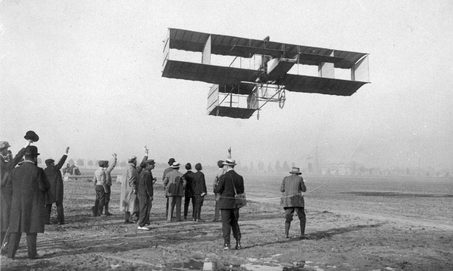
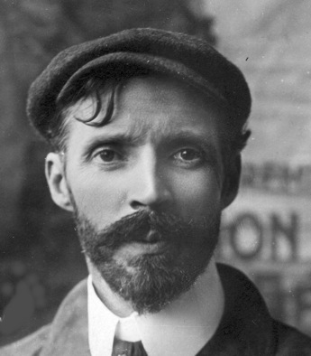 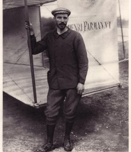
Михаил Ефимов
Большую роль в распространении пилотажа в России сыграли авиационные клубы.
Одним из первенцев стал созданный в 1908 году Одесский авиаклуб. Его воспитанником стал Михаил Ефимов, первый русский дипломированный пилот.
В 1910 г. Михаил Никифорович закончил во Франции летную школу Анри Фармана.
Он побил рекорд по продолжительности полета с пассажиром, принадлежавший Орвиллу Райту, впервые осуществил крупные виражи, пикирование и планирующий полет с выключенным двигателем и одним из первых в отечественной авиации освоил ночные полеты.
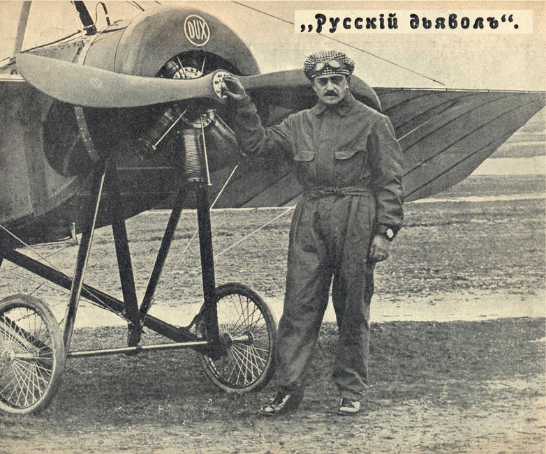
Сергей Уточкин
Сергей Уточкинн стал вторым русским пилотом.
На самолете "Farman" облетает почти всю Центральную Россию, устанавливая рекорды по дальности, высоте и продолжительности полетов.
Сергей Королев, Павел Сухой, Сергей Ильюшин, Николай Поликарпов признавались, именно эти полеты зародили у них стремление взлететь в небо, создавать новые аппараты и моторы для них.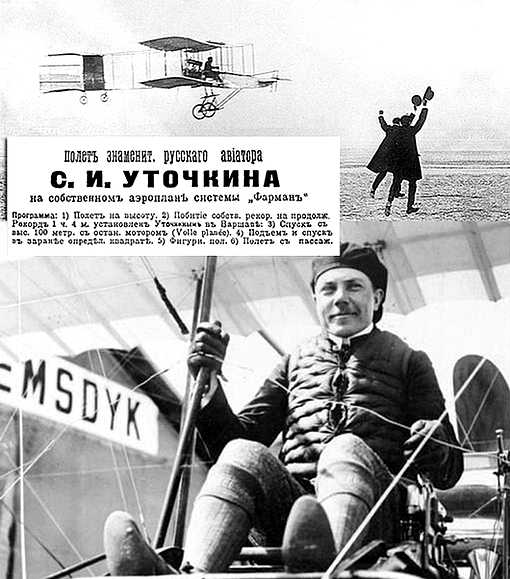 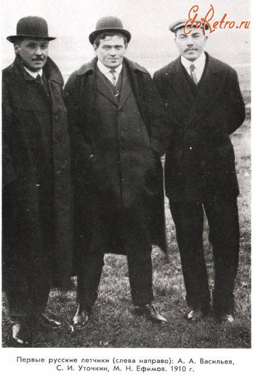
Нестеров П.Н.
Увлечение авиацией началось с 1910 г. В 1911 г., находясь в отпуске в Нижнем Новгороде, Нестеров стал членом Нижегородского общества воздухоплавания. В 1912 г. он сдал экзамены на звания пилота-авиатора и военного летчика, и уже в сентябре 1912 г. совершил первый самостоятельный полет.
Нестеров активно занимался конструкторской деятельностью: еще в 1910 г. спроектировал и построил планер, на котором летал.
27 августа 1913 года Петр Николаевич Нестеров осуществил "мертвую петлю" - замкнутую кривую в воздухе по вертикали. Это был мировой подвиг, прославивший не только исполнителя, но и Россию, русскую армию.
Русский пилот отстаивал мысль о возможности и необходимости воздушного боя, который, ввиду отсутствия в то время на самолёте пулемёта, он усматривал в таране, причем неприятельская машина должна быть сбита ударом сверху. 26 Августа 1914 года прославленный лётчик совершил бессмертный подвиг - таранил самолёт австрийского пилота Ф. Розенталя, который вёл воздушную разведку передвижения русских войск.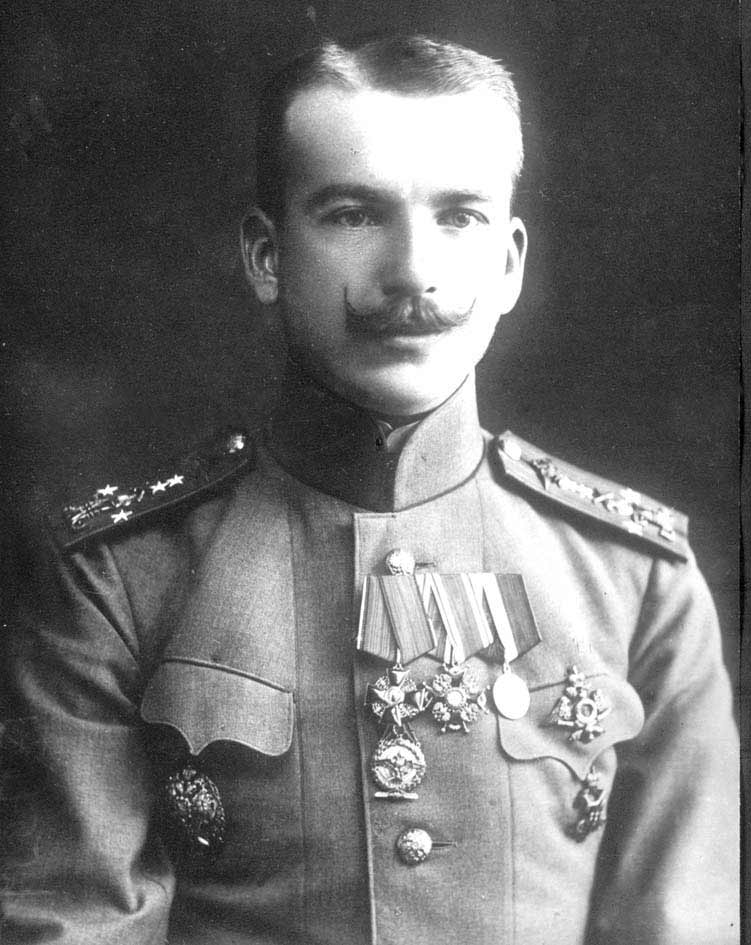 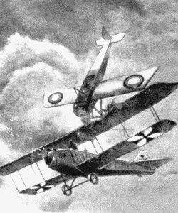
Казаков А.А.
Второй лётчик в истории, применивший воздушный таран, и первый, оставшийся после тарана в живых.
18 марта 1915 г. А.А.Казаков совершил второй после П. Н. Нестерова воздушный таран. Во время маневра был сбит германский аппарат типа «Альбатрос», сам Казаков сумел благополучно посадить свою машину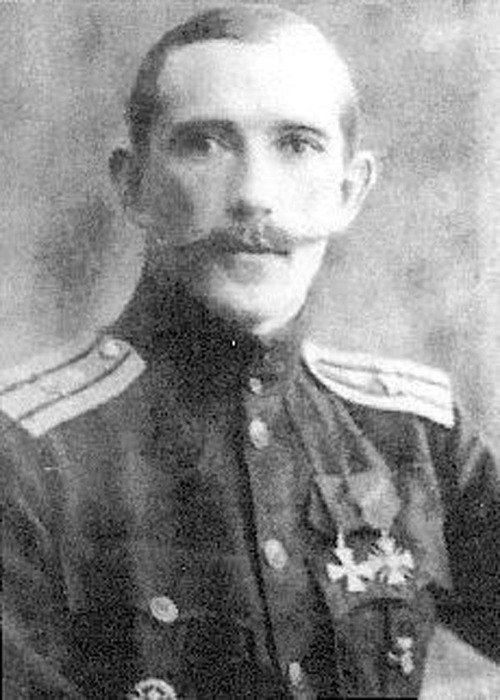 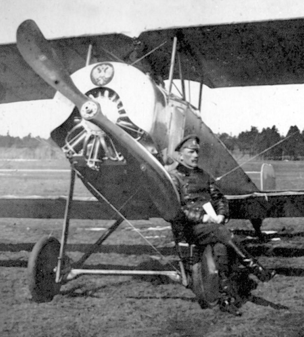
Зверева Л.В.
Первая русская летчицей стала Зверева Лидия Виссарионовна. Летному мастерству она обучалась в Гатчинской школе. Большая заслуга Л.В.Зверевой состояла в популяризации авиационного дела в России и в деле производства самолетов в своей стране.
Зверева первой из женщин выполнила мёртвую петлю Нестерова, штопор Арцеулова, пикирование с выключенным мотором. Несколько раз попадала в серьёзные авиааварии, но отделывалась только царапинами и ушибами.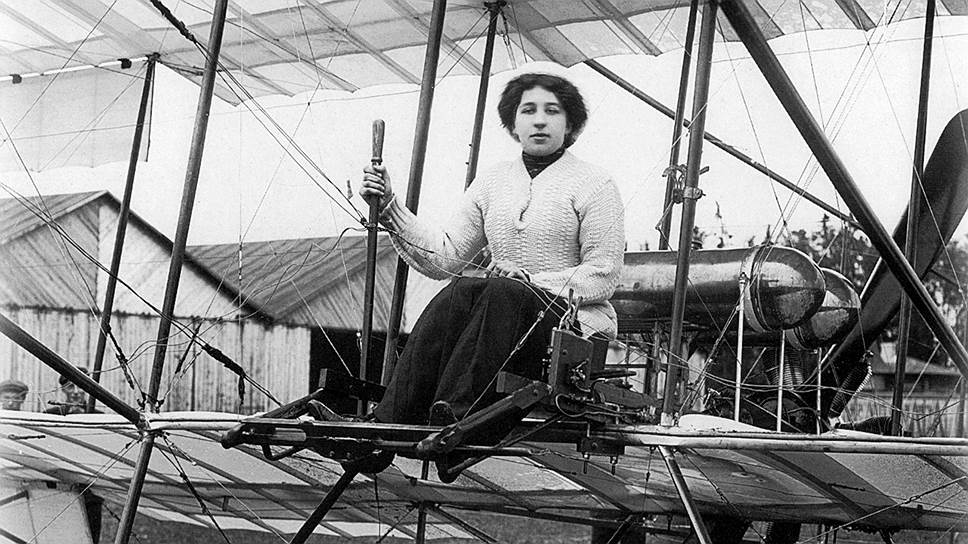
Первые Пермские летчики
Василий Васильевич Каменский
Родился 14 января 1852 г., из семьи крепостных служителей. Детство прошло в селе Боровское на Урале; когда ему ещё не было и пяти лет он потерял родителей и воспитывался в семье тётки Александры Гавриловны Трущовой, сестры матери.
В 1911 году ездил за границу, в Берлин и Париж, для обучения лётному делу, на обратном пути побывал в Лондоне и Вене. Также учился в варшавской лётной школе «Авиата» у Харитона Славороссова. Новаторское стихотворение «Танго с коровами» он посвятил своему учителю:«С оловянным веселием смотрим мы на судьбу. Мы — Открыватели Стран — Завоеватели Воздуха…».
В автобиографическом романе «Путь энтузиаста» он писал:
«Среди авиаторов — Славороссов — самый замечательный… самый талантливый рекордист… Славороссова я избрал своим учителем-инструктором… В глазах — взлетающие аппараты. В ушах — музыка моторов. В носу — запах бензина и отработанного масла, в карманах изолировочные ленты. В мечтах — будущие полёты». Вообще авиаторы на земле веселились, как школьники, но едва прикасались к аэроплану — наступало перерождение: лица отражали сосредоточенную волю, короткие движения — решительность, скупые, спокойные слова — хладнокровие, выдержку».
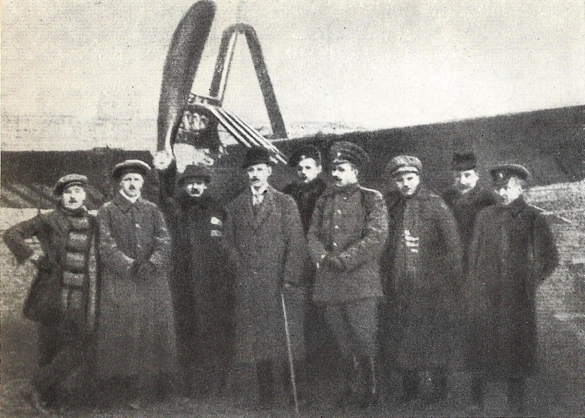
Василий Каменский (второй слева) и Харитон Славороссов (третий справа) на аэродроме «Авиаты»Василий под руководством своего опытного инструктора успешно сдал экзамен на звание пилота. Затем недолгое время Каменский был авиатором, одним из первых в стране освоил моноплан «Блерио XI». Именно Василий Каменский впервые ввел в обиход столь привычное нам сегодня слово «самолёт». До Каменского летательные аппараты называли лишь «аэропланами».
Каменский в 1911 г. совершает полёты в Перми, Нижней Курье.
В 1912 году, в Варшаве, один из полётов заканчивается катастрофически, аэроплан разбился, пилот получил серьёзные травмы. Летать после этого Каменский перестал, но, живя после этого в Перми, он изобретает и испытывает на Каме аэроход.
В 1944 году ему ампутировали ногу, через год — вторую. 19 апреля 1948 года у поэта случился инсульт, и последние годы жизни он провёл парализованным. Умер в Москве 11 ноября 1961 года.
Именем Василия Каменского названа улица в микрорайоне Парковый города Перми. В селе Троица в Пермском районе Пермского края в доме, где жил поэт, открыт Мемориальный дом-музей В.В.Каменского.
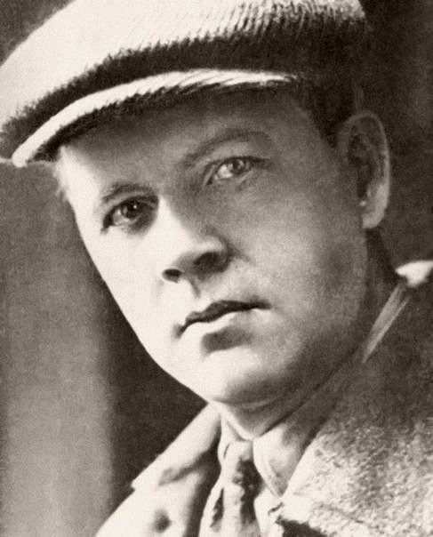 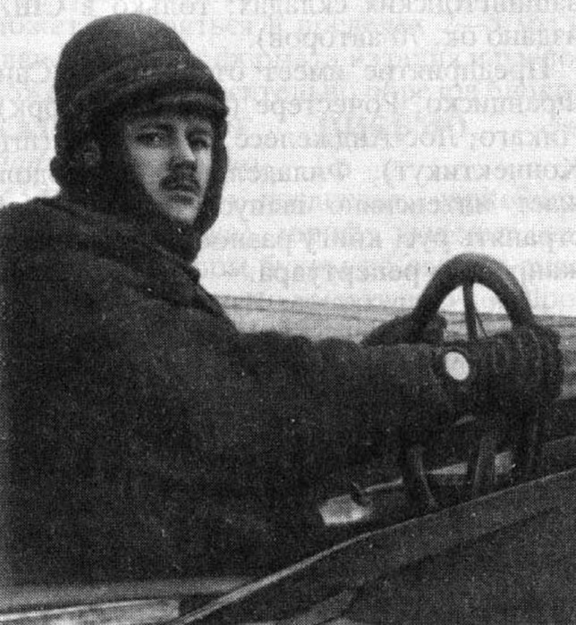
Алексей Дмитриевич Ширинкин
Алексея Ширинкина в годы Первой мировой и Гражданской войн считали одним из самых опытных боевых лётчиков Русской, а затем Красной Армии. На счету Ширинкина 11 воздушных побед.
Родился 24 февраля 1897 года в г. Нытва. В октябре 1914 года Ширинкин добровольно пошёл в 1-ю авиационную роту воздухоплавательной школы Всероссийского императорского клуба, располагавшуюся на Комендантском аэродроме. Весной 1915 года Ширинкин с отличием окончил учёбу, после чего был отправлен на фронт Первой мировой войны лётчиком-истребителем. Служил в 1-м истребительно отряде на Юго-Западном фронте, был старшим унтер-офицером.
В совершенстве владел приёмами высшего пилотажа, что позволяло ему атаковать превосходящие силы противника.
За боевые заслуги в боях Первой мировой войны он был награждён Георгиевскими крестами 4-х степеней, орденами Святого Владимира 4-й степени с мечами и Святой Анны 1-й степени.
Он стал наставником первых лётчиков РККА. В 1919 году Ширинкин был назначен командиром 1-й авиационной эскадрильи, дислоцировавшейся на аэродроме Славное под Борисовым, позднее эскадрилье было присвоено имя Ширинкина. Активно участвовал в боевых действиях Гражданской войны. В воздушных боях он сбил 5 вражеских самолётов, став единственным настоящим асом ВВС РККА в период Гражданской войны.
После Гражданской войны опытный лётчик и командир А.Д.Ширинкин занимал высокие командные посты в Советской авиации. Некоторое время командовал 7-й авиационной эскадрильей ВВС Московского округа. Затем, по заданию Наркомата обороны СССР, создал на Украине 2-ю воздушную эскадру и был её командующим. Большое внимание уделял Ширинкин и обучению молодых пилотов сложному авиационному делу, с любовью и терпением передавал им свой богатый боевой опыт. Учил пилотов науке побеждать врага в любых условиях воздушного боя, на любой высоте.
С 1932 году Ширинкину довелось испытывать в воздухе многие типы самолётов: Туполева, Ильюшина, Архангельского и других.
14 декабря 1937 года Ширинкин был арестован по обвинению в шпионаже и подготовке террористического акта. Военная коллегия Верховного Суда СССР 7 февраля 1938 года приговорила его к высшей мере наказания — смертной казни. Приговор был приведён в исполнение 8 февраля 1938 года на полигоне «Коммунарка», там же он был захоронен.
17 января 1963 года Алексей Дмитриевич Ширинкин был посмертно полностью реабилитирован.
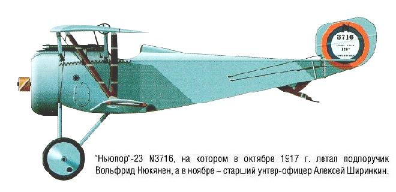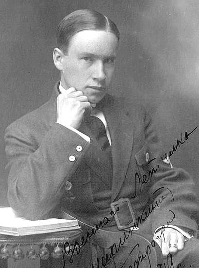 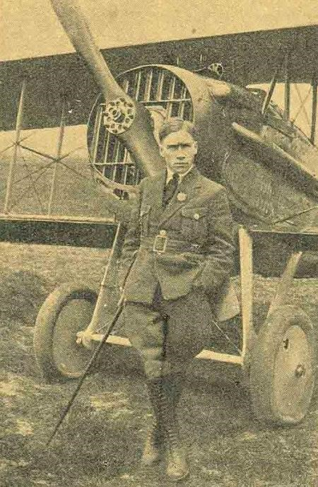
-
Фирма братьев Райт
Основателями первого самолетостроительного предприятия стали изобретатели аэроплана Орвилл и Уилберт Райт.
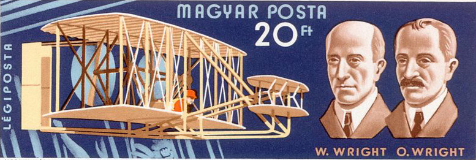
Их семейная фирма "Wright Company" имела филиалы по всему миру и приносила большие доходы.
Фирма братьев Вуазьен
Первая французская авиафирма, "Les Freres Voisin", была создана в 1906 году Шарлем и Габриелем Вуазьен.
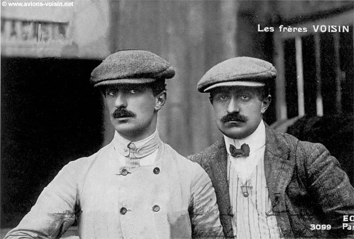
На этом предприятии Э. Ардикон и Луи Блерио построили свои первые планеры.
Фирма Эдуарда Ньюпорта
Французская компания "Societe Anonyme des Etablissements Nieuport" была основана Эдуардом де Ньюпором в 1910 году.
Первый самолет был создан на основе аэропланов Блерио, но имел фюзеляж более обтекаемой формы.
На этом аппарате его создатель, Ньюпор, установил мировой рекорд скорости.
Славная страница истории самолетов "Nieuport" связана с Россией.
В 1913 году в Киеве именно на аппаратах этой фирмы П.Н.Нестеров выполнил "мертвую петлю".

Летчик Нестеров у своего Nieuport N.IV после мертвой петли.